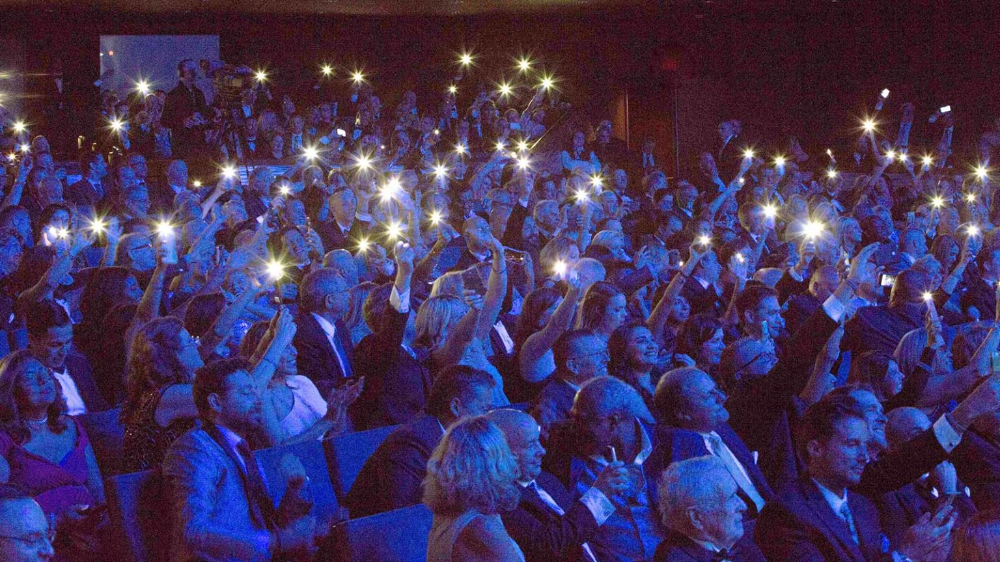

In-Person Events
The way we connect, engage, interact, and consume is changing rapidly.
And yet, face-to-face events continue to be the most powerful medium to create memorable, tangible moments that educate, inspire, entertain, and connect you with your audience.
It all starts with an idea. Your idea.
Then we work with you to design and create whatever type of live event solutions you can dream up. From the initial spark through post-event measurement, our consultative approach and our live event management help you deliver not just powerful events — but the strategies and tactics that will inspire your audiences to action and deliver the moments that matter.
Underpinning it all is our industry-leading approach to health and safety, as well as the reliability that only comes from working with Freeman. The result? Pure magic.
Solutions for any type of live event
When planning either an in-person event, large or small, it all comes down to one thing: your audience.
And the way you engage your audience at face-to-face events is changing. Lean on the trusted expertise of the only live event company who has literally seen it all and done it all. Ready to redefine live?
If you need help with your:
- Corporate events and exhibits
- Conferences, trade shows, and annual meetings
- User summits, product launches, sales kickoffs, and press events
- Award galas, VIP events, and special events
- Sponsorships, roadshows, pop-ups, and installations
- Anything else you can dream of!
We can create personalized experiences that deliver on your objectives:
- Envision an engaging event strategy and build a robust portfolio
- Grow your audience and develop messaging that resonates
- Design memorable experiences and create great content
- Manage your event details: content, speakers, and more
- Build an exhibit that delivers business results
- Strategize, develop, sell, and manage your event sponsorships
- Expand your in-person event to a virtual audience
- Increase engagement, streamline communications, and collect the right data event technology
Safety for you saves events
The health and safety of our teams, our customers, and the wider community in which we work is our highest priority. Our SafeConnect standards, protocols, and service offerings reflect our values and commitment to keep our people, our customers, and attendees safe.
Our commitment: Freeman will implement our health and safety practices and continue incorporating and enhancing best practices in line with the latest scientific developments as issued by local and state health authorities and the Centers for Disease Control (CDC).
Freeman supports and is aligned with the Global Biorisk Advisory Council (GBAC) standards.